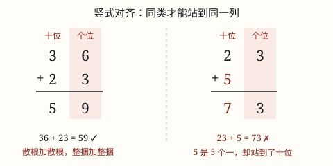

100 以内加减法的口算与笔算
竖式把数按数位竖着排好：相同数位对齐、从个位算起；加法满十进一，减法退一当十。
| 所属主题 | 数的运算 |
|---|---|
| 所属模块 | 数与代数 |
| 课标学段 | 第一学段（1~2年级） |
| 前置知识 | 20 以内的进位加法与退位减法、100 以内数的组成与数位、20 以内的进位加法与退位减法 |
| 核心素养 | 运算能力数感推理意识 |
教材定位
人民教育出版社《2024年版》
对应一下第 5 单元「100 以内的笔算加、减法」：两位数加两位数、两位数减两位数的竖式。；对应一下第 4 单元「100 以内的口算加、减法」：整十数加减、两位数加一位数与整十数。
课标要求
| 数与代数·数与运算 | 探索加法和减法的算理与算法，会整数加减法。 印刷第 18 页 行为动词：掌握 |
|---|---|
| 数与代数·数量关系 | 在简单的生活情境中，运用数和数的运算解决问题，能解释结果的实际意义，形成初步的应用意识。 印刷第 19 页 行为动词：运用 |
| 数与代数·数与运算 | 在具体情境中，了解四则运算的意义，感悟运算之间的关系（例3）。 印刷第 18 页 行为动词：了解 |
| 数与代数·数与运算 | 在解决生活情境问题的过程中，体会数和运算的意义，形成初步的符号意识、数感、运算能力和推理意识。 印刷第 18 页 行为动词：体验 |
说明
两位数加、减两位数，数变大了，光靠口算容易乱。竖式把它们竖着排好：个位和个位对齐，十位和十位对齐，一位一位地算。
加法三步：对齐，从个位加起，满十向十位进 1。个位相加满十，就把凑成的十交给十位，个位只留剩下的几个。
减法三步：对齐，从个位减起，不够减就向十位借 1 当 10。借来的 1 个十顶 10 个一，个位就够减了。
竖式最大的好处：把一道大题拆成几道 20 以内的小题。个位一道、十位一道，一步一步走，不容易乱。
（100 以内的口算加减法）
口算就是不写竖式、不摆小棒，心里过一遍就把答案说出来。100 以内的数看起来有两种，其实只有两半：34 是 3 个十和 4 个一，60 是 6 个十和 0 个一。把数拆成「几个十」和「几个一」，口算就变成十与十碰头、一与一碰头。
第一类最简单：整十数加减整十数。20 + 30，只看 2 个十加 3 个十是 5 个十，写成 50；60 - 20，是 6 个十减 2 个十剩 4 个十，写成 40。口诀是「先算十位上的数，后面添一个 0」。
第二类是两位数加一位数：34 + 5，个位上的 4 和 5 合起来是 9，不满十，十位上的 3 不用动，得 39。可要是 39 + 5，个位 9 + 5 = 14，满十了，个位写 4、向十位进 1，十位上的 3 变成 4，得 44。这就是「凑十」：先把个位凑满 10，剩下的往十位进 1。
第三类是两位数加整十数：34 + 30，个位上的 4 一个也不动，十位上的 3 加 3 变成 6，得 64。减法正好反过来：39 - 5 是 39 - 0 - 5，个位 9 减 5 得 4，十位 3 不动，得 34；要是 34 - 8，个位 4 减 8 不够减，就得从十位借一个十下来，变成 14 - 8 = 6，十位借走 1 剩 2，得 26。这就是「破十」：十位借一个十给个位用。
五类口算都靠着同一条线：不管加还是减，先看个位够不够。够就一加一减，不够就从十位借一个十下来（加法则是从个位凑一个十送上去）。算完还有一招可以验算：加法用减法倒回去验，例如 39 + 5 = 44，用 44 - 5 = 39 对上了就说明没错。
使用场景
买东西算总价：书包 45 元，文具盒 37 元，收银台一共收多少？列个竖式 45 + 37，个位、十位各算各的。
付款找零：付 90 元买一套 56 元的书，找多少？90 - 56，个位 0 不够减 6，正好练退位。
班级统计：图书角两摞书数出 68 本和 25 本，合起来多少本？借出 39 本还剩多少本？一加一减，都是竖式的活。
体育计分：跳绳比赛算两人小组的总成绩，或比一比两人相差多少下，都是两位数加减两位数。
（100 以内的口算加减法）
超市买书：一本 34 元的书和一本 5 元的笔记本，一共多少钱。
班级图书角：原来有 64 本书，借走 30 本，还剩多少本。
公交车站人数：车上原有 45 人，到站又上来 8 人，现在有多少人。
教室清点粉笔：一盒 76 支，用掉 40 支，还剩多少支。
超市结账：一箱牛奶 25 元，一袋面包 70 元，付 100 元够不够。
注意点
相同数位必须对齐。一位数 5 加 23：5 是 5 个一，必须写在个位那一列。它要是站到十位，就冒充 5 个十了。
从个位算起。先算十位的话，个位后来进上来的 1 或借走的 1，十位就得回头重改，最容易漏。
进位的 1 别忘了加。45 + 37，个位 5 + 7 = 12，写 2 向十位进 1；十位算完 4 + 3，还要加上这个 1。
退位后十位要少 1。52 - 38，个位不够减，十位的 5 借走 1 只剩 4；十位算的是 4 - 3，不是 5 - 3。
（100 以内的口算加减法）
先看清是哪一类。同样是加法，加一位数只动个位，加整十数只动十位，两者的算法完全不同。
满十要进位，不够减要退位。39 + 5 的 9 + 5 = 14，个位写 4 并进 1；34 - 8 的 4 减 8 不够，得从十位借 1 个十下来。
借位以后十位要少 1。34 - 8 借走一个十，十位上的 3 变成 2，答案 26，不是 36。
整十数相加减别忘了添 0。2 个十加 3 个十是 5 个十，写 50 而不是 5。
算完倒回去验一验。加法算出的和减去一个加数，应该正好等于另一个加数。
为什么是这样

图 1：竖式对齐不是写字好看，是让「几个一」和「几个一」「几个十」和「几个十」站到同一列
算理推导
先用小棒算 36 + 23：摆 3 捆 6 根和 2 捆 3 根。整捆和整捆合在一起：3 + 2 = 5 捆；散根和散根合在一起：6 + 3 = 9 根。一共 5 捆 9 根，就是 59。
小棒早就告诉我们：只有同类才能直接相加。整捆是「几个十」，散根是「几个一」，谁也不能跟谁直接合并。
竖式就是小棒竖着摆：36 的 6 和 23 的 3 都写在个位那一列——它们都是散根，都是「几个一」；36 的 3 和 23 的 2 都在十位那一列——它们都是整捆，都是「几个十」。对齐，就是让同类站到同一列。
再看退位减 52 - 38：个位 2 不够减 8，就像破十法那样向十位求救——十位借出 1 个十，相当于拆开一捆变成 10 根散根，个位变成 12 - 8 = 4；十位只剩 4 捆，4 - 3 = 1。结果是 14。竖式里在十位上点个小圆点，记着「借走 1」。
（100 以内的口算加减法）
先攻最简单的整十数：20 + 30 为什么等于 50？因为 20 是 2 个十、30 是 3 个十，2 个十和 3 个十合起来是 5 个十，5 个十写成 50。添的那个 0 不是凑数，它代表「十」这个单位，漏了它单位就变小了。
再看两位数加一位数：39 + 5 为什么是 44？把 39 看成 3 个十加 9 个一，9 个一加 5 个一合起来是 14 个一，14 个一就是 1 个十加 4 个一，那个 1 个十并进原来的 3 个十，变成 4 个十加 4 个一，所以是 44。位满十进一，说的是「满 10 个一就换成 1 个十」。
然后是退位减法：34 - 8 为什么是 26？3 个十里有 10 个一可以拆出来，拆出的 10 个一加上原来的 4 个一是 14 个一，14 个一减 8 个一剩 6 个一；手里还剩 2 个十，合起来是 26。破十不是把十位弄丢，而是把十位里的十拆成个位用一用。
接着看两位数加整十数：34 + 30 为什么是 64？加的是 30，就是加 3 个十，个位一个也不动，十位上的 3 变 6，得 64；再想 60 - 20，是 6 个十减 2 个十剩 4 个十，写成 40。整十数加减只碰十位，个位原样保留。
最后看为什么这五类可以放在一起练：因为它们的根都是「把数拆成几个十和几个一」。口算和竖式是同一件事的两种快慢，竖式把拆开的过程写下来，口算把它放在脑子里。练得多了，「39 + 5」不用想就知道个位要进位，这就是所谓的口算熟练。
动手实验
先用小棒算 45 + 37，边摆边说：「散根 5 + 7 = 12 根，捆成 1 捆剩 2 根；整捆 4 + 3 = 7 捆，加新捆的 1 捆是 8 捆」。再用竖式算同一题，对照小棒说说：个位进上来的 1，就是那捆新捆出来的小棒。最后换 62 - 45，摆一次「拆捆」，再写一次退位竖式。 （100 以内的口算加减法） 拿 100 根小棒（或 100 张便利贴）分成两堆：一堆 30 根、一堆 20 根，合起来数一数是多少根（50 根），体会整十数相加就是「十」在相加。再把 34 根小棒中的一捆（10 根）拆开，和剩下的 4 根摆在一起数（14 根），观察 14 根小棒怎么变成「1 捆加 4 根」（进位）。最后摆出 34 根小棒拿走 8 根，看看拆开的那一捆是怎么被借走的。
按场景的例题
例 1（场景：购物消费） 开学买文具
书包 45 元，文具盒 37 元，买这两样一共要多少元？
解：竖式 45 + 37：个位 5 + 7 = 12，写 2 向十位进 1；十位 4 + 3 + 1 = 8，写 8。一共 82 元。
答：一共要 82 元。
例 2（场景：农业生产） 图书角借绘本
图书角原有 85 本绘本，本周借出 39 本，还剩多少本？
解：竖式 85 - 39：个位 5 不够减 9，向十位借 1，15 - 9 = 6，写 6；十位 8 借走 1 剩 7，7 - 3 = 4，写 4。差是 46。
答：还剩 46 本。
例 3（场景：上学日常） 跳绳小组成绩
跳绳小组两人合跳：小禾跳了 63 下，小满跳了 28 下，两人一共跳了多少下？
解：竖式 63 + 28：个位 3 + 8 = 11，写 1 进 1；十位 6 + 2 + 1 = 9，写 9。一共 91。
答：两人一共跳了 91 下。
例 4（场景：家庭与年龄） 攒零花钱买绘本
小宇的储钱罐里攒了 72 元，他花 56 元买了一套绘本，还剩多少元？
解：竖式 72 - 56：个位 2 不够减 6，借 1 当 10，12 - 6 = 6，写 6；十位 7 借走 1 剩 6，6 - 5 = 1，写 1。差是 16。
答：还剩 16 元。
例 5（场景：物流运输） 书店里一本故事书 34 元，一本笔记本 5 元
买这两样一共要多少元？
解：34 + 5：个位上的 4 加 5 等于 9，不满十，十位上的 3 不用动，得 39。
答：一共要 39 元。
例 6（场景：校园生活） 班级图书角的书被借走了
图书角原来有 64 本书，借走了 30 本。还剩多少本？
解：64 - 30：减的是整十数，个位上的 4 一个也不动，十位上 6 个十减 3 个十剩 3 个十，得 34。
答：还剩 34 本书。
例 7（场景：行程出行） 公交车到站又上来几位乘客
车上原有 45 人，到站又上来 8 人。现在车上有多少人？
解：45 + 8：个位上 5 加 8 等于 13，满十进 1，个位写 3，十位上的 4 变成 5，得 53。
答：现在车上有 53 人。
例 8（场景：计量与估算） 教室里的粉笔盒
一盒粉笔有 76 支，用掉了 40 支。还剩多少支？
解：76 - 40：减整十数只看十位，7 个十减 4 个十剩 3 个十，个位的 6 留着，得 36。
答：还剩 36 支粉笔。
常用推论
加法交换律 a + b = b + a：竖式里上下两个数换位置，得数不变。
差 + 减数 = 被减数：减法算完，把差加回减数，等于原来的被减数，就查出了对错（验算）。
和 − 一个加数 = 另一个加数：加法也能倒回去查一遍。
a - b - c = a - (b + c)：连着减两个数，可以把它们合成一个数一次减掉，竖式更短。
整十数加减整十数：先算十位上的数相加減，再在结果后面添一个 0。
两位数加一位数、十加整十数，个位和十位各自算各自的；只有个位满十时才动十位。
两位数减一位数、十减整十数，个位不够减就从十位借一个十下来，十位要记得少 1。
加法和减法互为逆运算：算完可以用相反的运算倒回去验算。
易错点
错5 + 23 = 73。
为什么错写竖式时把 5 放到了十位那一列，让它和 2 相加。5 是 5 个一，只能站个位。
正确竖式里 5 写在 23 的个位 3 下面：个位 3 + 5 = 8，十位是 2，得 28。
错52 - 38 = 24。
为什么错个位借了 1，十位却还按原来的 5 算：5 - 3 = 2。借走的 1 没扣掉。
正确十位先扣借走的 1 再减：5 - 1 - 3 = 1，所以 52 - 38 = 14。
错45 + 37 = 72。
为什么错个位 5 + 7 = 12 写 2 进 1，十位只算了 4 + 3 = 7，进上来的 1 忘了加。
正确十位 4 + 3 + 1 = 8，所以 45 + 37 = 82。
错算 39 + 5 得 39。
为什么错个位上 9 加 5 等于 14，满十要向十位进 1，进位这一步整个漏掉了。
正确39 + 5 = 44。
错算 45 + 8 得 43。
为什么错个位 5 + 8 = 13，个位应该写 3 并向十位进 1，这里只写了 3，十位忘了加那个 1。
正确45 + 8 = 53。
错算 34 - 8 得 36。
为什么错个位 4 减 8 不够，从十位借了一个十下来，十位上的 3 就该变成 2；借了十却没减十，等于白借。
正确34 - 8 = 26。
错算 20 + 30 得 5。
为什么错把 2 个十加 3 个十算成了 2 + 3，单位「十」被丢掉了，添 0 的那一步没做。
正确20 + 30 = 50。
直观理解
竖式像超市收银台分类扫码：散装的鸡蛋一个一个数（个位），整箱的按箱数（十位）。先分类，再各自合计。谁和谁是一类，早在数位里就分好了——「对齐」就是让同一类货站到同一队。进位是散装凑满一箱搬上去，退位是拆一箱下来补散装。 （100 以内的口算加减法） 把 100 以内的数想成两堆小棒：捆好的算「十」，散着的算「一」。口算就是让两堆分别对上——十跟十比多少，一跟一比多少。加法里如果散的那堆凑满了 10 根，就捆成 1 捆并到捆堆那边去；减法里如果散的那堆不够减，就从捆堆里拆 1 捆下来拆散。所以「进位」和「退位」其实是同一件事：十和一之间的搬运。
数位对齐再动笔，个位算起要牢记；满十进一别忘加，退一当十先减一。 （100 以内的口算加减法） 口算口算不离十，整十相减添个零；个位满了就进位，不够减来破十行。